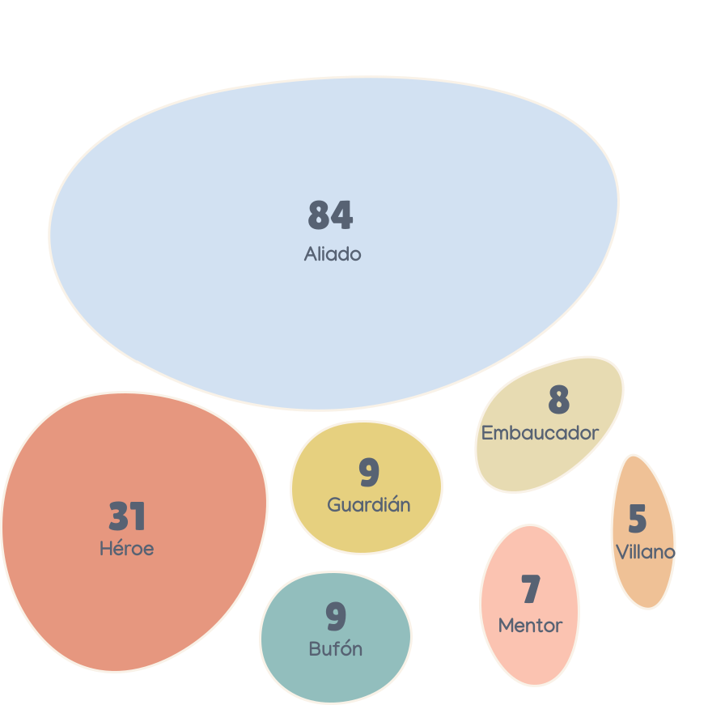
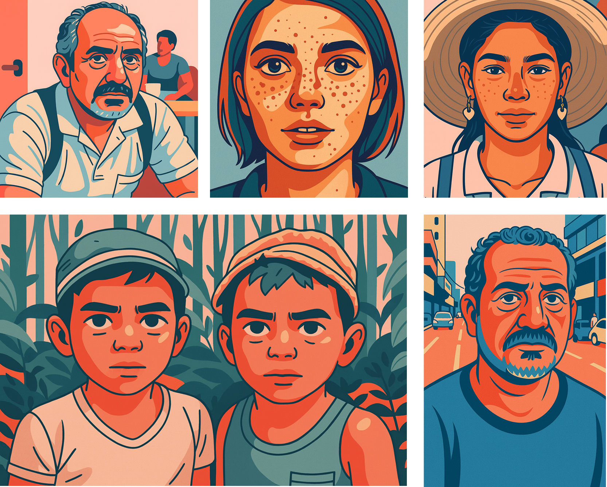

Por lo anterior, quisimos analizar patrones dentro de estos guiones para entender
¿Qué está escribiendo
la nueva generación
de guionistas?


En Centro Ático, desarrollamos una herramienta para conectar la Inteligencia Artificial con los guiones (GuionIA), con el fin de analizar las motivaciones, temáticas, géneros cinematográficos, conflictos, tropos narrativos, arquetipos de personajes, cómo se ven los personajes y los escenarios de estas historias. Lo anterior, para darle respuestas a preguntas representativas dentro del campo de la industria audiovisual.
Lo primero que hicimos fue preguntarnos por las motivaciones que impulsan a la nueva generación de guionistas a participar en el Laboratorio de Guion

Y entendimos que cada guion es una forma de decir:
Algunos escriben para recordar, otros para sanar. Algunos quieren construir personajes más vivos, otros,
contar una historia que no ha sido escuchada. Hay quienes sueñan con dirigir un cortometraje. Y quienes,
simplemente, quieren aprender a narrar mejor.
Además, detrás de todas esas razones, hay algo común y es
el deseo de transformar lo vivido en algo que otros puedan ver.
Haz clic en cualquier elemento.


# de guiones en esa categoría


La principal motivación de los participantes fue la construcción de personajes , con un total de 152 estudiantes agrupados en esta categoría. Le sigue el desarrollo de la historia , con 38 participantes que manifestaron interés en fortalecer la estructura narrativa de sus guiones. Esta distribución da cuenta de las diversas razones que impulsan a los jóvenes creadores a participar en el Laboratorio de Guion.
Además, evidenciamos un patrón en los temas de los guiones.

Escribir parte de una vivencia común, que une cultura y territorio
Palabras como identidad, violencia, pérdida, relaciones, familia, superación y amistad aparecen como ejes centrales. También emergen palabras como culpa, soledad, autoaceptación, memoria y redención. Así el mapa de Colombia, muestra que en el imaginario de los estudiantes guionistas estan presentes las huellas del reflejo de nuestro país.
Nos dimos cuenta que los temas se relacionan con el género cinematográfico


GuionIA clasificó los guiones según el género cinematográfico, encontrando que la mayoría de los participantes:


# de guiones con ese género
Para los jóvenes guionistas, hay un interes por explorar las historias intensas, ya sea desde lo emocional o desde lo fantástico. En un segundo plano, aparecen géneros como el thriller, la comedia y la fantasía, que son etilos diversos que se pueden reflejar en el contexto colombiano.
Como somos tan dramáticos ¿Qué tipo de conflictos estamos trabajando?

Haz clic en cualquier elemento.


el entorno

determinado
GuionIA clasificó los conflictos narrativos, siendo el
conflicto interpersonal
el más frecuente, con 115 casos, lo que indica que gran parte de las historias se centran en las relaciones
entre personajes, ya sea en el ámbito familiar, amoroso o de amistad.
Le sigue el
conflicto interno
, con 62 guiones que abordan dilemas personales, crisis emocionales o procesos de transformación
individual.
El conflicto hace parte de nuestro ADN ¿Será que esto define los tropos narrativos dentro de los guiones?


Los tropos clásicos como el viaje del héroe, la identidad secreta o la muerte trágica, son el resultado de
patrones funcionan como huellas narrativas y que conectan las historias con la tradicón audiovisual.
Tropos más contemporáneos como el loop temporal, el enemies to lovers o el del falso culpable,
permiten articular conflictos internos de los jóvenes guionistas.
Y ¿Quiénes encarnan los personajes de estas historias?

El arquetipo del aliado, apoya al protagonista y que suele ser clave para el desarrollo emocional o moral de la historia. El héroe o heroína, estan en búsqueda de transformación, con objetivos claros y desafíos que enfrentar, y el guardián, defiende, protege y cuida a los demás. La presencia de estos arquetipos sugiere que los estudiantes, incluso sin formación avanzada en teoría cinematográfica, logran crear personajes conectados con modelos narrativos reconocibles, adaptándolos a sus propias historias, contextos y sensibilidades.
Y si le preguntamos a GuionIA ¿Cómo lucen fisicamente los personajes?

GuionIA nos permitió darles forma a los personajes imaginarios de los jóvenes guionistas y concretar el trabajo realizado dentro del taller de construcción de personajes.
GuionIA también sabe de geografía y ubicó los lugares en donde estas historias cobran vida
Los escenarios de las historias se desarrollan en un contexto local, son espacios reconocibles de su memoria y su experiencia. Pero también hay quienes apuestan por escenarios globales, utópicos o fantásticos, abriendo la posibilidad de situar a sus personajes en cualquier parte del mundo… o en mundos que aún no existen.